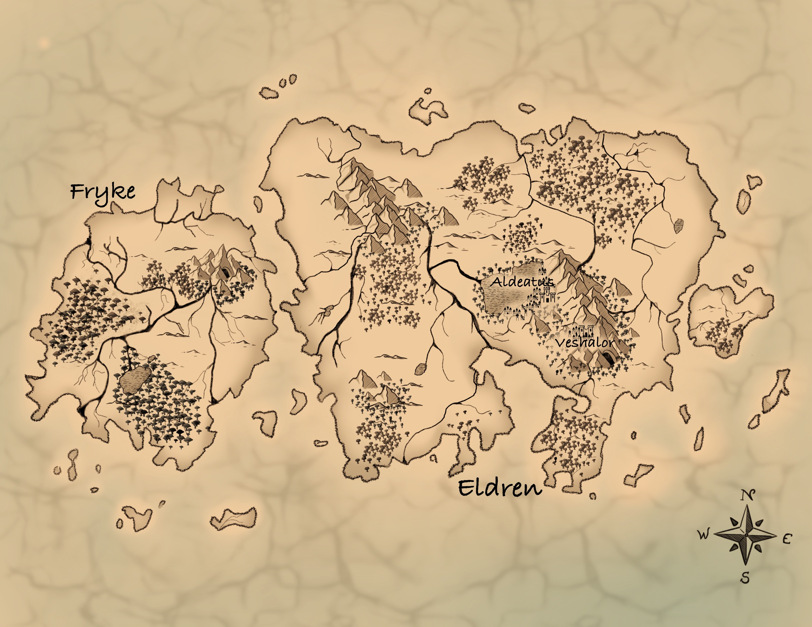

Maps of Avelis
Explore Avelis through different views of the world. Select a map below to view cities, geography, or political boundaries.

Viewing: City Map
View important cities, settlements, and developed areas throughout Avelis.
Explore Avelis through different views of the world. Select a map below to view cities, geography, or political boundaries.

View important cities, settlements, and developed areas throughout Avelis.